This course focuses specifically on Flow Apps. For more training on Automations, see the Automate Workflows with FME Flow learning path.
After completing this lesson, you’ll be able to:
An Automation is a workflow that reacts to an event (a trigger) and then performs one or more actions. Triggers respond to events such as updated files, webhooks, or scheduled times and send a message to trigger downstream actions to run. Actions often include running one or more FME workspaces, sending emails, writing files, or branching based on results. You connect these steps on a canvas so the process runs the same way every time.
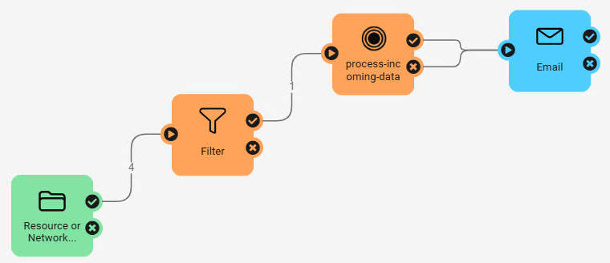
This course focuses specifically on Flow Apps. For more training on Automations, see the Automate Workflows with FME Flow learning path.
Automation Apps allow you to trigger an Automation to run through an app. Like other Flow Apps, you access and share Automation Apps with URLs that FME Flow generates once you build your app. By sharing app URLs, users may access FME Automations functionality without requiring any FME knowledge or expertise.
To create an Automation App, you fill out a form setting details for the app and select the Automation you wish to run from the app.
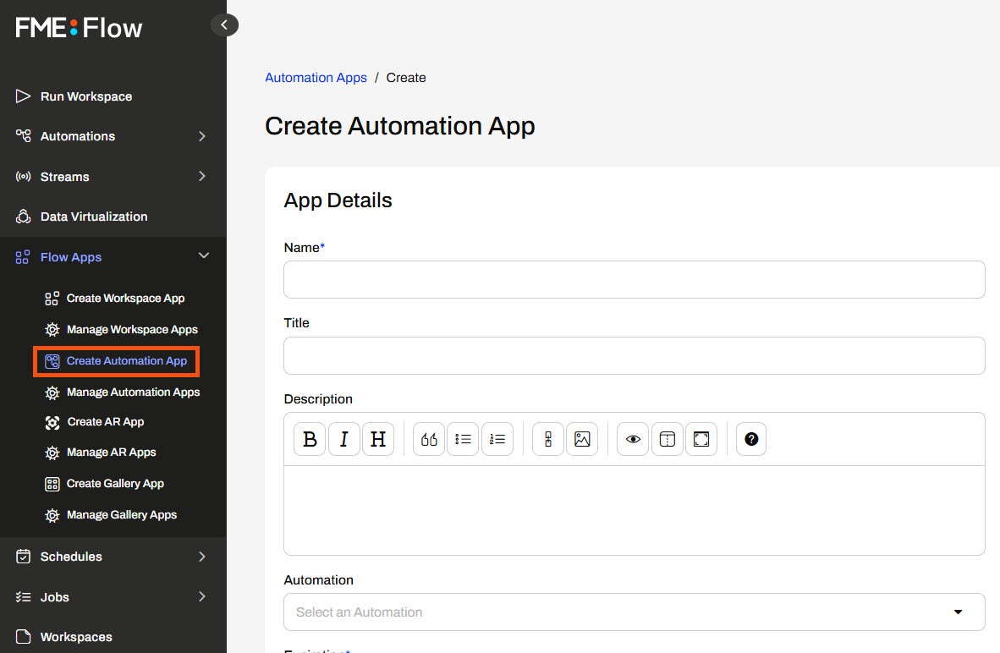
Like Workspace Apps, you fill out the form on the app page and click Run.

How Automation Apps trigger Automations
Automation App permissions work differently from other Flow Apps. Due to the complexity of Automations, app users must log into FME Flow to run an Automation App to trigger an Automation. When you build your Automation App, you select which users and roles on your FME Flow to give access to your app.
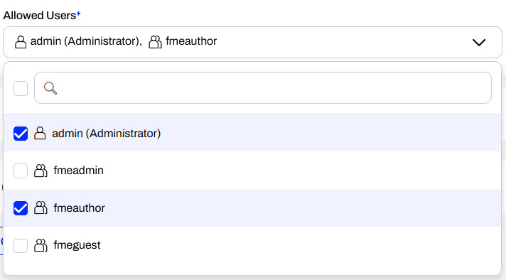

Sven, a planning analyst for a local government, is developing a workflow that sends alerts about addresses affected by various infrastructure and planning projects. He has an FME Flow Automation that runs two workspaces. The first workspace clips residential address locations to an input geometry area, and the second workspace configures a notification based on the project type. It then sends an email with a list of addresses and some information about the disruption. Sven fills out the parameters and then manually triggers the Automation on the FME Flow. Now, Sven is going to create an Automation App using his Automation so he can easily trigger it without having to navigate to the Automation on FME Flow and allow his colleagues to use it.
Follow along with Sven's steps as he creates an Automation App for his workflow.
Sven navigates to FME Flow and opens Manage Automations. He clicks the City Project Notifications Automation to open it.
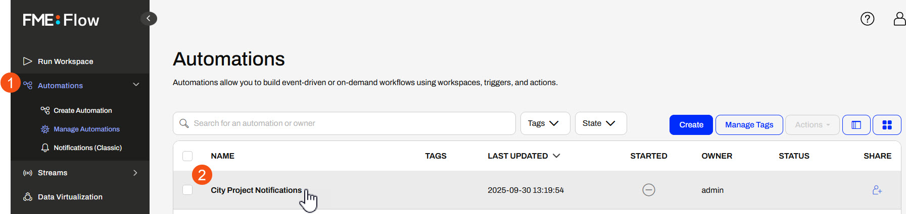
The Automation runs two workspaces, sends an email, and is already configured with a manual trigger. Sven has already created some manual parameters to take input from the user in the Automation App. To see the Manual Parameters, Sven clicks the Manual Trigger icon to open the Details, clicks the Output Attributes, and expands the Success and Manual Parameters sections.
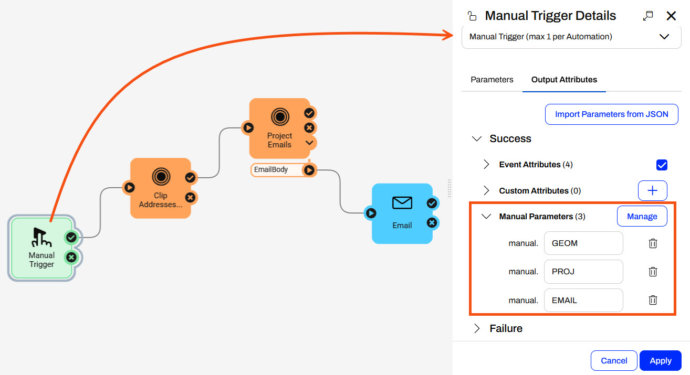
Sven clicks Cancel to close the Manual Trigger Details and starts the Automation.
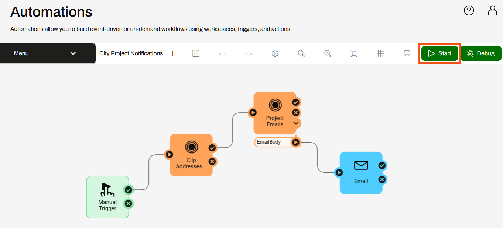
Once the Automation starts, a message displays that it is running.
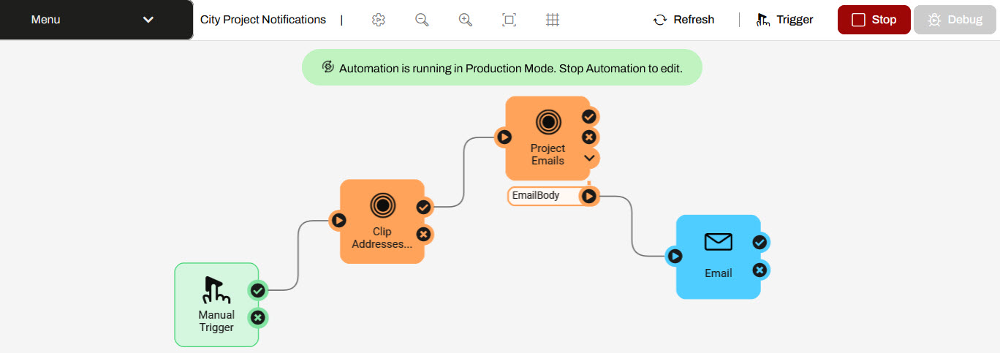
With his Automation running, Sven expands Flow Apps and selects Create Automation App. He fills out a Name, Title, and Description for the app. For the Automation, Sven selects City Project Notifications.
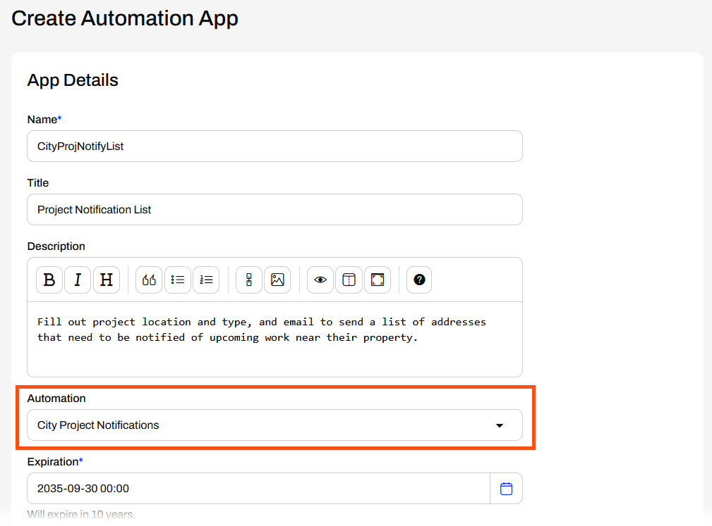
Sven leaves the Expiration, and uses the drop-down to add the fmeauthor role to the Allowed Users. His colleagues in the fmeauthor role will be able to access and run his Automation App.
Sven expands the Parameters section. These are the Manual Parameters from the Automation that take input from the app to the Automation. He does not set any defaults and collapses the section.
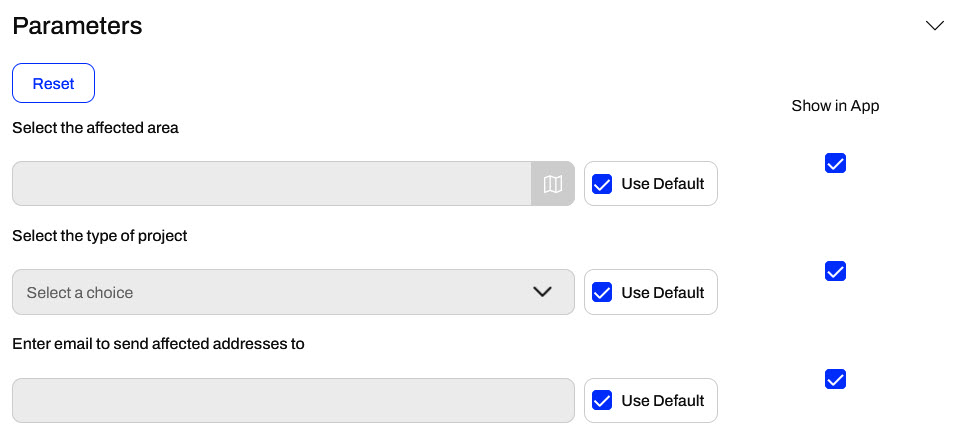
Sven scrolls to the bottom of the page and clicks Create to create his app.
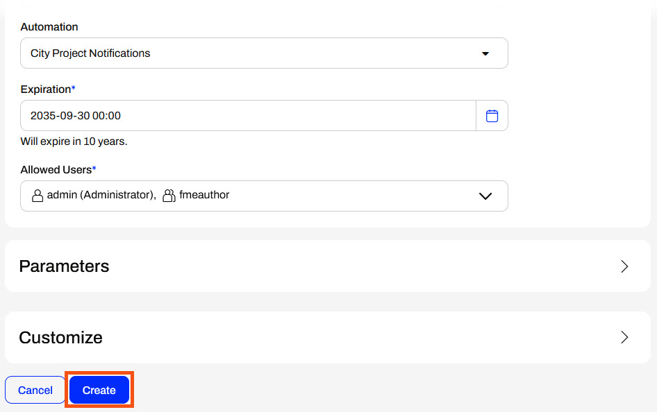
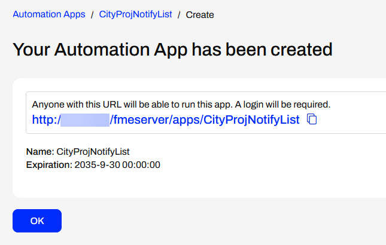
After creating the app, FME Flow presents Sven the app URL, which he can copy to share or click to open. He clicks the URL to open it in a new tab.
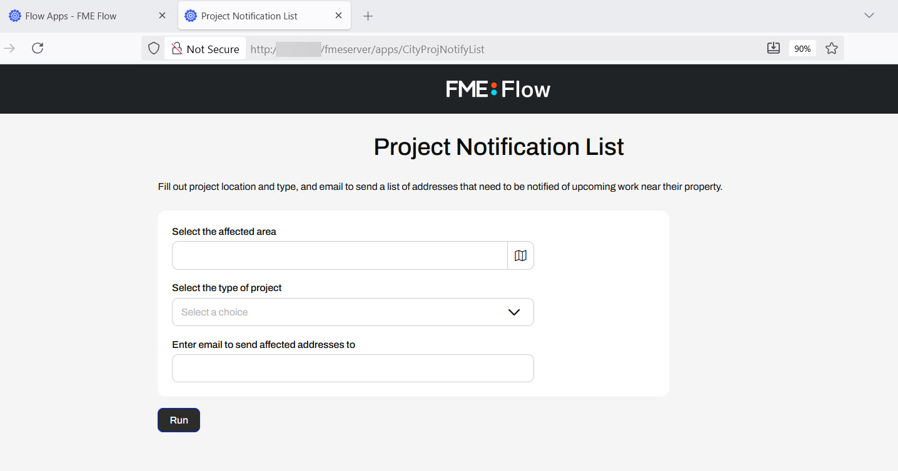
Sven clicks the map icon to open the web map to set the geometry for the affected area. He selects the geometry shape he wishes to define and then draws the feature on the map. He clicks Confirm to close the map.
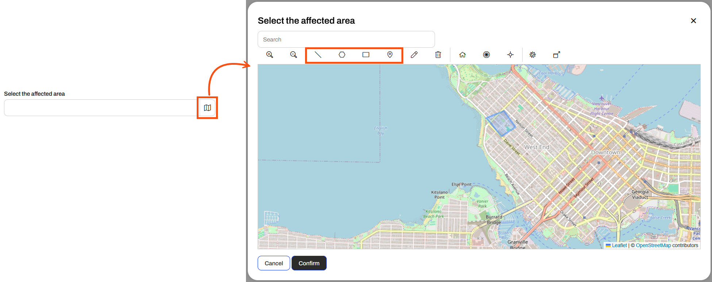
He selects the project type and enters his email to receive the list of addresses to notify.
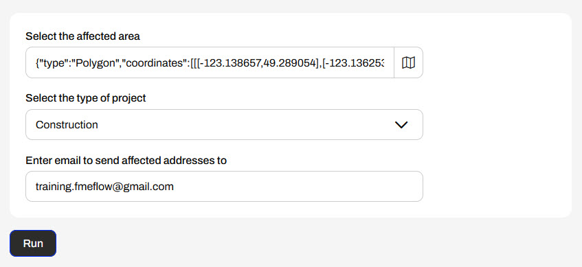
Once his parameters are set, he clicks Run to trigger the Automation. FME Flow displays a message that the Automation was triggered.
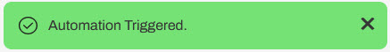
Sven waits a moment and then checks his email for the message containing the list of addresses to notify.
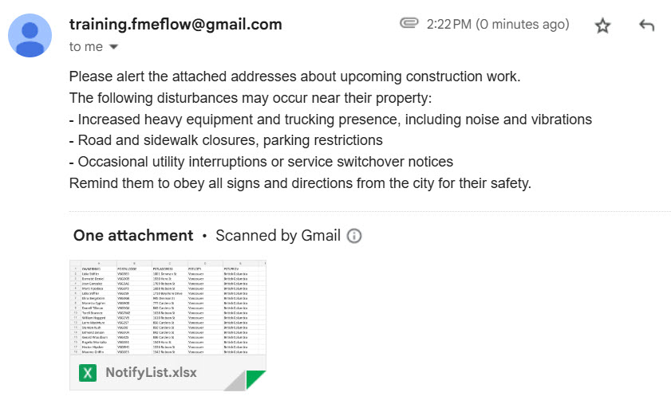
Sven has successfully built an Automation App to take user input and trigger an FME Flow Automation to run. His app triggers the Automation to run two workspaces and send an email with data queried from the input parameters set by the app user.